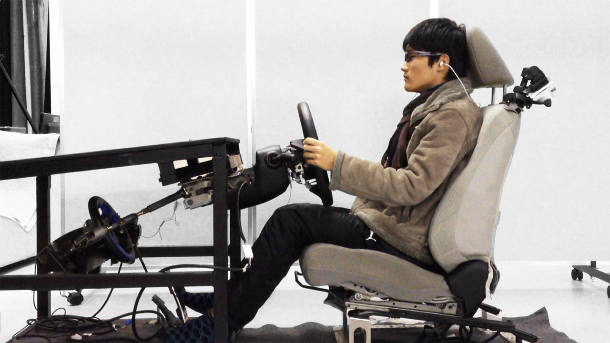

Drowsy Driving Prevention System Using Cardiorespiratory Phase Synchronization

Drowsiness is one of the main factors leading to car accidents. Many automotive companies and institutions have been researching ways to monitor drowsiness and keep drivers alert. When drowsiness is detected during driving, audible sounds, vibrations, or messages on a display are usually used to warn the driver to concentrate on driving or to rest. These methods help prevent drowsy driving crashes to some extent, but for greater safety, methods must be developed to physiologically overcome drowsiness. The key to overcoming sleepiness is to maintain a constant supply of oxygen to the body. We focused on cardiorespiratory phase synchronization (CRPS) to recover from oxygen desaturation during sleepiness. This study found that it was possible to induce CRPS by paced breathing (PB) using pulse sounds synchronized with heartbeats. The experimental results showed that SpO2 measured from the forehead increased during this PB. The increase in SpO2 was greater than that of yawning, deep breathing, or a period of spontaneously reduced sleepiness. In conclusion, the induction of CRPS by PB using pulse sound synchronized with heartbeat has the potential to physiologically reduce sleepiness.
Reference
I. Takahashi, T. Takaishi, and K. Yokoyama, “Overcoming Drowsiness by Inducing Cardio-Respiratory Phase Synchronization,” IEEE Transactions on Intelligent Transportation Systems. 15(3): 982-991, 2014. DOI: 10.1109/TITS.2013.2292115
I. Takahashi and K. Yokoyama, “Preventing Drowsiness by Heartbeat-Synchronized vibration,” Proceedings of the 34th Annual International Conference of the IEEE Engineering in Medicine and Biology Society. 3065-3068, 2012. DOI: 10.1109/EMBC.2012.6346611
I. Takahashi and K. Yokoyama, “Development of a Feedback Stimulation for Drowsy Driver Using Heartbeat Rhythms,” Proceedings of the 33rd Annual International Conference of the IEEE Engineering in Medicine and Biology Society. 4153-4158, 2011. DOI: 10.1109/IEMBS.2011.6091031
I. Takahashi, H. Ohashi, and K. Yokoyama, “Optimum Arousal Level Preservation System Using Bio-signals,” Journal of Human Ergology. 40(1-2): 119-128, 2011. DOI: 10.11183/jhe.40.119
I. Takahashi, H. Ohashi, and K. Yokoyama,“Driver’s Arousal Level Preservation System using Bio-signals,” Proceedings of the 3rd IEEE RAS & EMBS International Conference on Biomedical Robotics and Biomechatronics. 785-789, 2010. DOI: 10.1109/BIOROB.2010.5627022